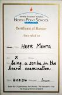
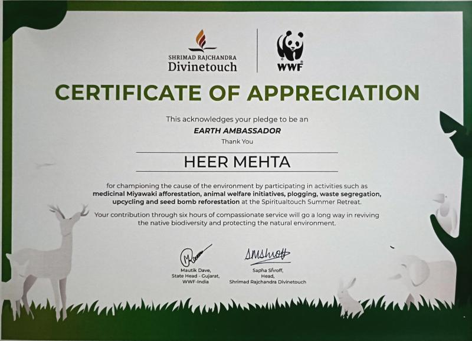

State Champion Orator (Rank 1 / 82,000) & Certified Social Impact Volunteer
State-Level Championship Oratory, Certified Exam Scribe & Grassroots Environmental Advocacy
Persuasive communication and social stewardship have formed the bedrock of my extracurricular journey, underscored by clinching 1st Place among 82,000 participants in the prestigious state-level Maharashtra Police Vyaktrutva Spardha oratory competition. Beyond varsity debates, extempores, and Model United Nations conferences, I channel my communication abilities into direct social impact. I acted as a certified board examination scribe for a differently-abled candidate, translating spoken analysis into written examination scripts under stringent regulatory scrutiny with unwavering patience and accuracy. To broaden inclusive accessibility, I volunteered for a month at the Deepak Foundation—Vadodara’s flagship NGO empowering visually and hearing-impaired children—where I mastered Indian Sign Language (ISL) to teach and coordinate engaging classroom activities. In the environmental sphere, I partnered with the World Wide Fund for Nature (WWF) in collaboration with Shrimad Rajchandra Divinetouch, actively executing Miyawaki afforestation, waste segregation, plogging, seed bomb reforestation, and animal welfare initiatives. These experiences cultivated profound empathy, grounded humility, and an enduring belief that leadership is defined by the lives we uplift.

